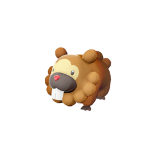
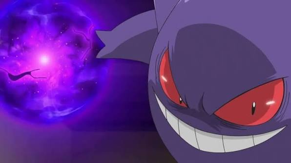

Treecko vs Torchic vs Mudkip
Treecko vs Torchic vs Mudkip
¿Cuál escoger? Comparemos sus ventajas y desventajas.
Treecko vs Torchic vs Mudkip
¿Cuál escoger? Comparemos sus ventajas y desventajas.

El Mejor Esclavo MORemplazados, pero ayudaron mucho.

Movimientos diferentes entre juegosPokémon es una franquicia con varios spinoff. Algunos tienen sus diferencias.